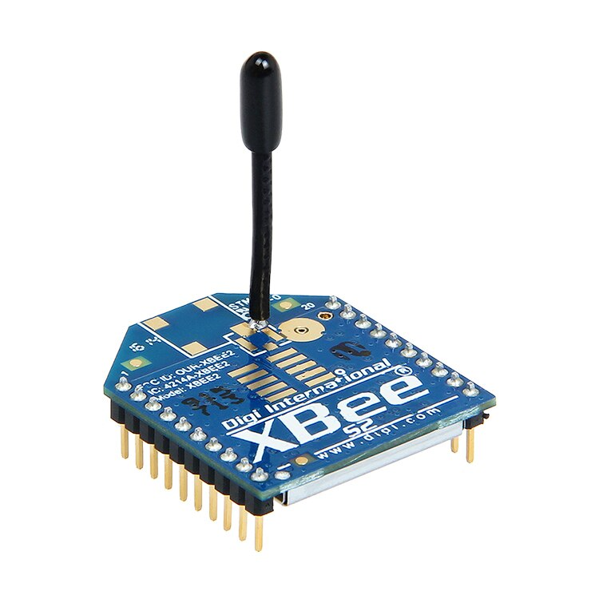

As a Freelance IT Consultant and professionally registered Electronic Engineer, I bring a unique combination of passion and expertise to the table. My extensive experience in engineering consultancy, embedded development, security consulting, web development, and business development makes me an invaluable asset for businesses seeking to optimize their digital presence while ensuring reliable systems integration.
Engineering Consultancy: With a strong background in electronic engineering and system integration, my focus on embedded development allows me to transform innovative ideas into successful products. Leveraging comprehensive knowledge in hardware design, software programming, and project management ensures efficient progress through every stage—from conception to final production.
My love for hacker culture and hackerspace environments has fueled my creativity with unconventional solutions that are often ahead of the curve. This enthusiasm is evident in each project as I approach challenges with innovative thinking.
Security Consulting: I share my knowledge on best practices in securing networks, applications, and data storage systems by conducting risk assessments and vulnerability analyses. Offering recommendations for strengthening existing infrastructures while minimizing potential threats is part of my expertise. Additionally, I provide training sessions for employees on maintaining good cybersecurity habits.
Web Development: Designing visually engaging websites with user-friendly interfaces that effectively meet client objectives is one of my strengths. Utilizing various programming languages like HTML, CSS, JavaScript and more enables me to create responsive web pages optimized for both desktops and mobile devices. Furthermore, incorporating SEO strategies into website design helps clients reach higher search engine rankings organically.
3.Addressing Business Development: Assisting companies in identifying growth opportunities within the ever-evolving digital landscape is an aspect where I excel by analyzing market trends and competitors' strategies. Developing comprehensive plans that outline actionable steps toward achieving specific goals while maximizing return on investment (ROI) allows me to support clients effectively . Collaborating with them throughout the implementation process ensures smooth execution of projects from start to finish.
Throughout my career journey since childhood—both within formal education settings as well as self-taught experiences—I have honed skills that extend beyond traditional IT domains into various social change initiatives driven by technology.
Using technical skills for social movements has allowed me not only to support important causes but also demonstrate how technological know-how can be harnessed effectively towards making a difference in society.
By offering these services as a freelance consultant—with equal emphasis on both IT consultancy and engineering aspects—I maintain flexibility over workload management while delivering high-quality results tailored specifically to each client's unique requirements!
IT / Engineering Consultancy
Project Details / Background
Image Gallery

XBee 2mW used for the Wireless Sensor Network